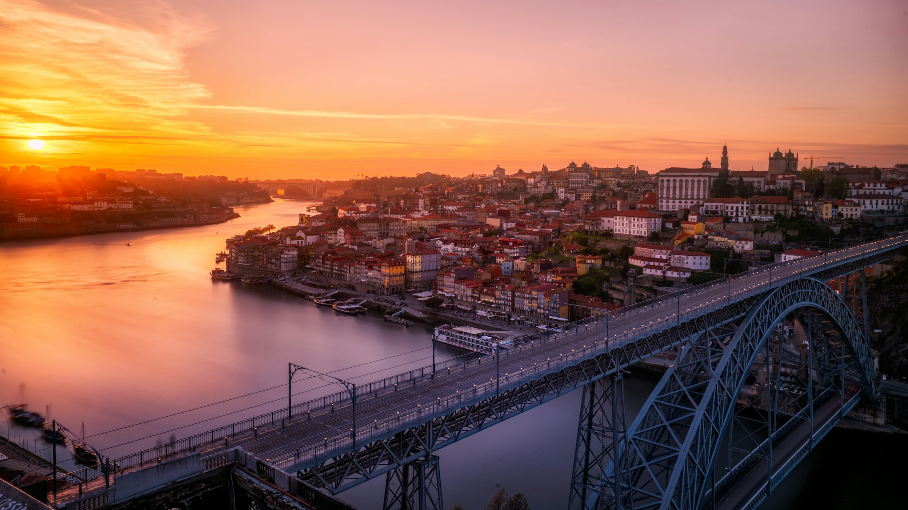
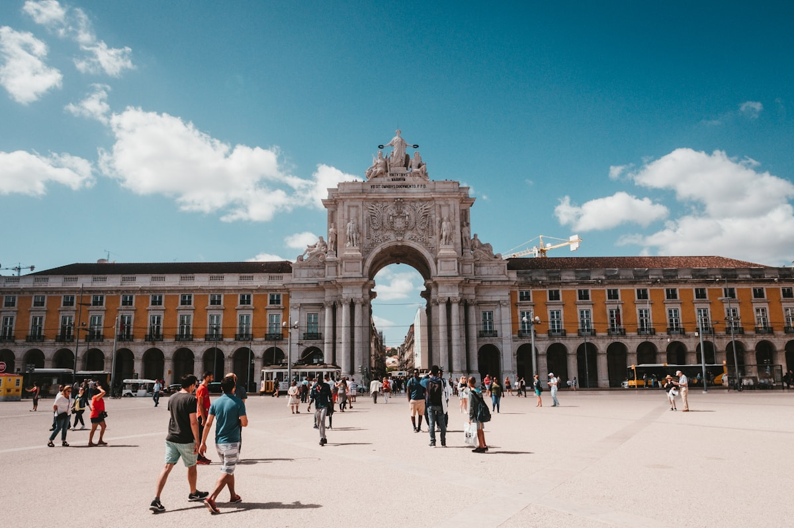
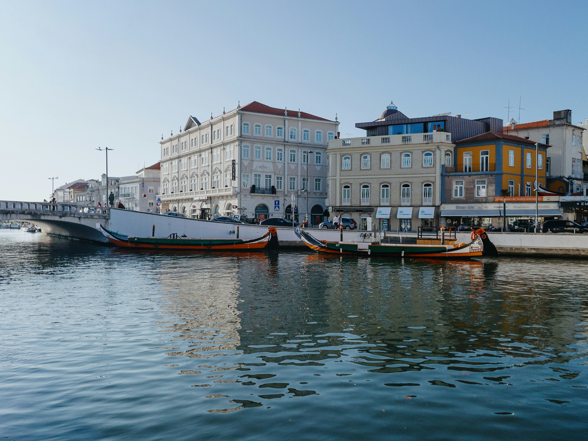
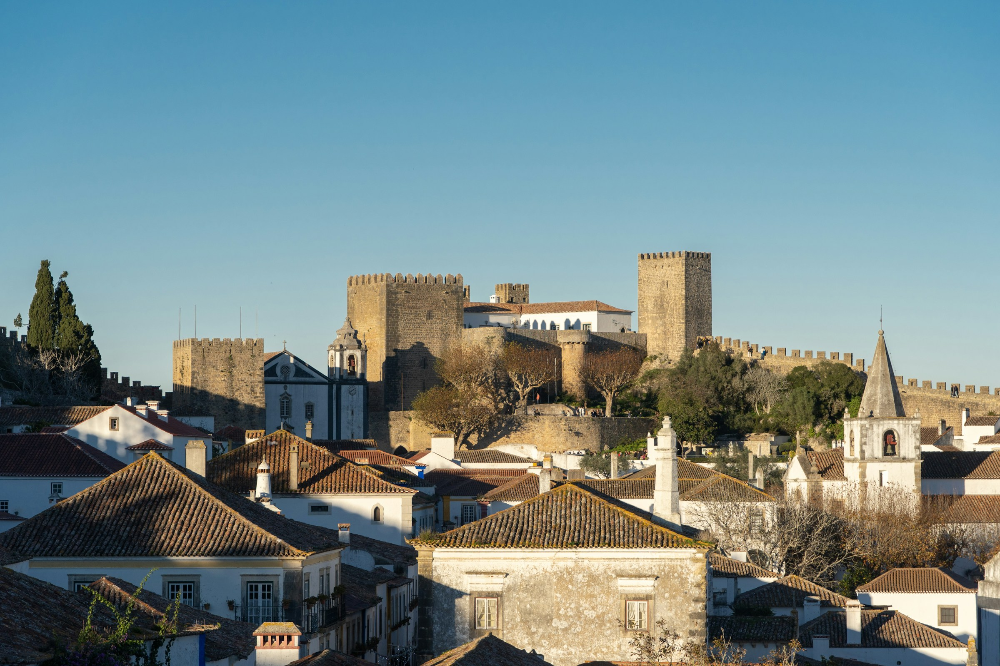
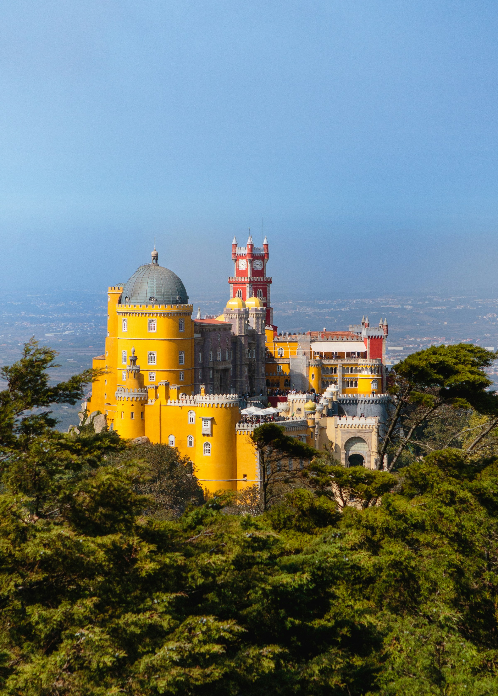

De Bestemmingen in Vogelvlucht
Klik op een dag voor alle details, tips en reserveringslinks

Dag 1 · zo 6–7 sep
Dag 2 · di 8–wo 9 sep
Dag 3 · do 10 sep Dag 4 · vr 11 sep
Dag 4 · vr 11 sep

Dag 5 · za 12 sep
Dag 6 · zo 13 sep